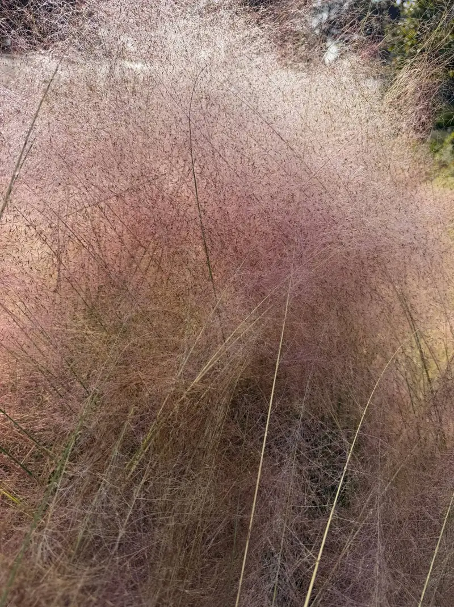
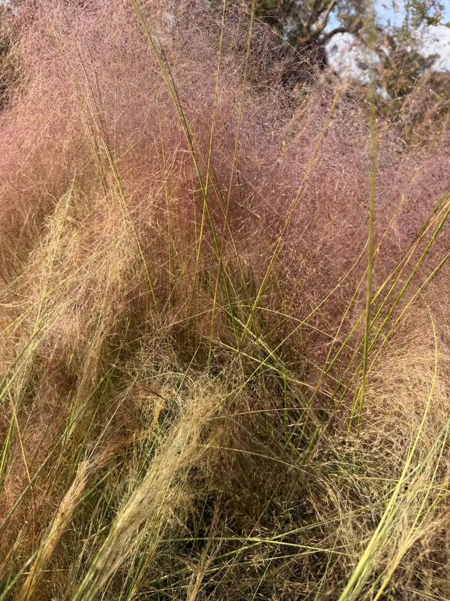
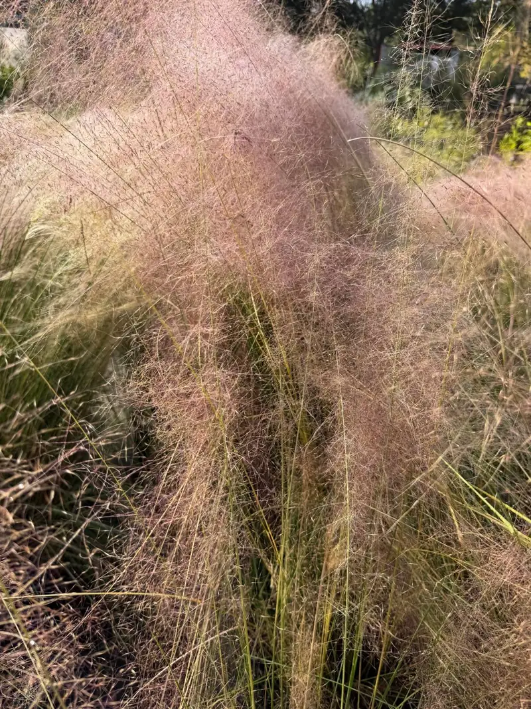

Gulf muhly (Muhlenbergia capillaris), also sold as pink muhly, is a native clumping grass about 2 to 3 feet tall and wide that covers itself in a haze of pink flower heads every October. It grows wild from Massachusetts to Florida and west to Kansas and East Texas. It wants full sun and soil that drains, and it asks for one cut a year, in late winter. Texas A&M AgriLife named it a Texas Superstar in 2022, and the City of Austin lists it in its Grow Green plant guide. This guide gathers what the floras, the USDA, university extension offices, botanic gardens, field trials, and growers have recorded about it, next to our own photos. Every fact is tied to a named source, and the sources are listed at the end.


What Are the Key Facts About Gulf Muhly?
| Fact | What the sources record |
|---|---|
| Botanical name | Muhlenbergia capillaris (Lam.) Trin., published in 1824 |
| Family | Poaceae, the grass family |
| Common names | Gulf muhly, pink muhly, hairawn muhly, hairy-awn muhly, hair grass, purple muhly grass, long-awn hairgrass |
| Type | Warm-season perennial bunchgrass. It forms a clump and has no runners |
| Native range | Massachusetts to Florida, west to southern Illinois, eastern Kansas, Oklahoma, and East Texas |
| Native to Travis County | No record. The City of Austin’s guide marks it as a Texas native from outside the Edwards Plateau and the Blackland Prairie |
| Clump size | 1.5 to 3 ft tall and 2 to 3 ft wide (Texas A&M AgriLife) |
| Height in flower | 3 to 5 ft across the sources |
| Flowers | Pink to purple, in an open, airy head up to half the height of the plant |
| Bloom time in Central Texas | October |
| Light | Full sun. It takes light shade and blooms less there |
| Water | Low to medium |
| Soil | Sand, loam, clay, or rock, as long as it drains |
| Cold rating | USDA zones 6 to 9 (Texas A&M AgriLife). Other sources run from zone 5 to zone 11 |
| Deer | High resistance (Lady Bird Johnson Wildflower Center) |
| Care | One cut a year, in late winter |
| Honors | Texas Superstar 2022, Louisiana Super Plant 2021, Garden Club of America Plant of the Year 2012, Mississippi Medallion 2010 |
| Conservation status | Secure across its range (NatureServe rank G5), and endangered at its northern edge in four states |
Where Do We Plant Gulf Muhly?
Where the low sun comes through it, in a group, and where you can see it from the patio. Those three choices do more for this grass than anything in the care section.
Put it between you and the setting sun. For a backlit planting, place the grass between your patio and the setting sun. Stand on the other side of gulf muhly in the late afternoon and you see the fine stems that make a whole planting look pink. The City of Austin’s Grow Green guide makes the same point in its one line on the plant: the seed heads give great fall color, especially when backlit.
Plant it in drifts. One clump is a pink puff. Several clumps set close are a band of color. The green clumps stay distinct at ground level, and above them the pink flowers run together. Texas A&M AgriLife says the same: a group makes more striking color than a single plant.
Leave the seed heads. Birds feed on the seeds after the plumes fade, and the tan heads stand through winter. We cut the grass back in late winter.

On the steel terraces we built at the Overlook at Lewis Mountain, the white form, White Cloud muhly, grows in the terraced beds with blue fescue, variegated sedge, river fern, and boulders. A customer’s 2019 review of a front yard we landscaped lists what went in: "rocks, steel edging, zoysia grass, tree trimming, and coastal muhly grass." Coastal muhly is one more name this grass goes by.
On our city pages, gulf muhly sits in the planting palettes for Mueller, Pflugerville, Circle C, Cedar Park, and Round Rock, next to Texas sage, autumn sage, blackfoot daisy, and Lindheimer muhly.
What Is Gulf Muhly?
It is a warm-season perennial bunchgrass in the grass family, Poaceae. The Flora of North America describes it as a tufted perennial with no rhizomes. The USDA’s fact sheet says the same in plain words: it clumps, and it does not spread by stems above or below the ground.
- Family: Poaceae, the grass family
- Subfamily and tribe: Chloridoideae, tribe Cynodonteae (Flora of North America)
- Genus: Muhlenbergia, about 155 species, most of them in the Western Hemisphere (Flora of North America)
- Season: warm season. The Flora of North America notes that the grasses of this subfamily in North America use C4 photosynthesis, the kind built for heat and bright light
- Habit: a mound of thin, wiry leaves, with unbranched stems that rise above the leaves in fall
That last point explains the calendar. The plant spends spring and summer as a green mound. The show comes at the end of the hot season.
Is Gulf Muhly the Same as Pink Muhly?
In a Texas nursery, yes: gulf muhly and pink muhly are two names for the plant sold as Muhlenbergia capillaris. Among botanists the answer is longer, because three closely related grasses share these names.
| Source | Muhlenbergia capillaris | Muhlenbergia sericea (also called M. filipes) | Muhlenbergia expansa |
|---|---|---|---|
| Flora of North America | Hairy-awn muhly | Dune hairgrass, purple muhly | Savannah hairgrass |
| USDA PLANTS | Hairawn muhly | Gulfhairawn muhly | Cutover muhly |
| Lady Bird Johnson Wildflower Center | Gulf muhly, hair-awn muhly, hair grass, pink muhly | Dune hairgrass, gulfhairawn muhly, purple muhly | Cutover muhly, savannah hairgrass, spreading muhly |
| Shinners and Mahler’s Flora of North Central Texas | Hairy-awn muhly, long-awned hair grass, slender muhly, gulf muhly |
The Flora of North America separates the three by the bristle, called an awn, on each flower, and by where each one grows.
| Feature | M. capillaris | M. sericea | M. expansa |
|---|---|---|---|
| Awn on the flower | 2 to 13 mm, or none | 8 to 35 mm | Usually none |
| Leaf blade | 4 to 14 in. long, flat or rolled | 14 to 39 in. long, usually rolled | 8 to 20 in. long |
| Where it grows | Rocky or clay soils in open woods and savannahs, and on limestone outcrops, from sea level to 1,640 ft | Sandy ground on barrier islands and in coastal woods, from sea level to 165 ft | Wet soils in bogs and pine savannahs, from sea level to 985 ft |
Botanists have argued over whether these are three species or one. A 1989 study treated them as varieties of one species. A 2007 DNA study by Gustafson and Peterson supports three, and NatureServe, the Flora of North America, and World Flora Online all list three today.
The sources also disagree about which one the nurseries sell.
- Plant Delights Nursery: botanist Patrick McMillan wrote in 2022 that the pink muhly of the nursery trade is the coastal grass, M. sericea, with its longer and showier awns, and that it is less cold hardy than true M. capillaris
- USDA NRCS: its 2009 plant guide says M. capillaris is widely sold in the Southeast, and that the coastal grass is sold as purple muhly
- University of Florida: its fact sheet calls the two very similar
For a yard in Austin the name on the tag is Muhlenbergia capillaris, and the care on this page fits the plant behind it. Austin sits at the warm end of every cold rating in the hardiness table below.
Where Does the Name Come From?
From a Pennsylvania pastor and from the Latin word for hair.
- Muhlenbergia: the German botanist Johann Schreber named the genus in April 1789 for Gotthilf Heinrich Ernst Muhlenberg (1753 to 1815). Muhlenberg was born in New Providence, Pennsylvania, became the Lutheran pastor at Lancaster in 1780, and spent the rest of his life there. The Wildflower Center notes that he was the first president of Franklin College, now Franklin and Marshall College, and that his botany earned him a name as America’s first outstanding botanist
- capillaris: NC State Extension gives the meaning as hair-like. The Florida Wildflower Foundation traces it to the Latin capillus, hair
- Hairawn: each flower carries a hair-thin awn up to half an inch long
- First description: the French naturalist Jean-Baptiste Lamarck described the grass in 1791 as Stipa capillaris
- Current name: Carl Bernhard von Trinius moved it into Muhlenbergia in 1824
Muhlenberg met this grass himself. World Flora Online lists Agrostis setosa, a name from his own book on grasses published in 1817, among the old names for it. The grass later settled into the genus that carries his name.
Where Does It Grow Wild?
Across the eastern United States, from Massachusetts to Florida and west to Kansas, Oklahoma, and East Texas. The Flora of North America lists 26 states plus the District of Columbia and Puerto Rico, and adds the Bahamas.
- Soils and settings: rocky or clay soils in open woodlands and savannahs, and limestone outcrops, from sea level to 1,640 feet (Flora of North America)
- In the Northeast: outcrops and ridges of diabase and sandstone (Flora of North America)
- Wildflower Center: sandy pine openings, prairies, and dry, exposed ledges
- Mexico and Guatemala: the Wildflower Center and the Royal Horticultural Society extend the range south to Guatemala. A 2004 conservation plan by the New England Wild Flower Society reports that Paul Peterson, who wrote the Flora of North America treatment, places those southern specimens in a different species, Muhlenbergia rigida
In Texas it is a grass of the east and the coast.
| Source | Where in Texas |
|---|---|
| Illustrated Flora of East Texas (2006) | Widespread in East Texas, also the Gulf Prairies and Marshes, scattered in the Cross Timbers and Prairies, and west to Taylor County |
| Shinners and Mahler’s Flora of North Central Texas (1999) | Sandy forest openings in Grayson, Henderson, Lamar, and Tarrant counties, and mainly southeast and east Texas |
| USDA PLANTS | 40 Texas counties, among them Bastrop, Fayette, Lampasas, and McLennan |
| Native Plant Society of Texas | East Central Texas Plains, Gulf Coast Prairies and Marshes, Texas Blackland Prairies, and Western Gulf Coastal Plain |
Is Gulf Muhly Native to Austin?
It is a Texas native, and no record places it wild in Travis County.
- USDA PLANTS: Travis County is not among its 40 Texas counties. The Austin on that list is Austin County, around Bellville
- Bill Carr’s checklist of Travis County plants (2008): it lists seven muhly grasses in the county, and gulf muhly is not one of them
- Herbarium records: GBIF, the global database of museum specimens, holds 318 preserved Texas specimens of this grass, and none is labeled Travis County
- Grasses of the Texas Hill Country (2015): Hagenbuch and Lemke’s survey of 15 counties, Travis among them, treats seven muhly grasses, and gulf muhly is not one of them
- City of Austin: the Grow Green guide codes each native by where it comes from. Gulf muhly carries a T, for native to Texas but not part of the Edwards Plateau or the Blackland Prairie
- Native Plant Society of Texas: its range for the grass takes in the Texas Blackland Prairies, the belt of dark clay that runs through eastern Travis County. The county records stop one county to the east
The nearest collections are close. At Bastrop State Park, about 30 miles east of Austin, collectors found it in deep sandy loam in the loblolly pine and post oak forest. In Fayette County it was collected on a hillside of calcareous clay in oak and juniper woodland, and in Lampasas County on gravelly clay loam.
The muhly that is native to Travis County and blooms pink is a different species, seep muhly (Muhlenbergia reverchonii). Carr’s checklist calls it common to locally abundant, and the Flora of North America notes that the two grasses resemble each other in many respects. Seep muhly is the featured plant on our Round Rock page.
How Do You Identify It?
Look for a mound of wiry leaves with an open, airy flower head that makes up as much as half the plant’s height. The measurements below come from the Flora of North America treatment by Paul Peterson.
| Part | What to look for |
|---|---|
| Habit | A dense clump with no runners |
| Stems | 2 to 3.3 ft tall, at times to 4.9 ft, upright and unbranched |
| Leaf blades | 4 to 14 in. long, at times to 31 in., and 2 to 4 mm wide, flat or rolled, smooth below and rough above |
| Ligule | A firm membrane 1.8 to 5 mm long where the blade meets the stem |
| Flower head | An open panicle 6 to 20 in. long and 2 to 12 in. wide, longer than wide |
| Branches | Hair-thin, 3/4 to 8 in. long, each lower branch carrying 5 to 20 flowers |
| Flower stalks | Hair-thin and flexible, 3/8 to 1.5 in. long, longer than the flowers they carry |
| Flowers (spikelets) | 3 to 5 mm long, usually purple |
| Awn | A bristle 2 to 13 mm long on each flower, or none |
| Anthers | Purple, 1.5 to 2 mm |
| Seed | A narrow brown grain 2 to 2.5 mm long |


Three things separate it from the grasses it is confused with.
- From seep muhly: the Flora of North America separates the two by the lemma, the small scale around each flower. Gulf muhly’s is dull and rough at the tip. The Illustrated Flora of East Texas describes seep muhly’s as smooth and shiny
- From Lindheimer muhly: Lindheimer muhly is larger, blue-green, and carries white plumes on stalks the City of Austin’s guide puts at 6 feet
- From Mexican feathergrass: feathergrass blooms earlier and in white. The Wildflower Center lists its bloom from June to September
Why Does It Look Pink?
Because the color sits in thousands of tiny flowers held apart on hair-thin stalks. Each tiny flower sits on a fine branch. Together they give the grass its pink haze.
- The flowers are purple: the Flora of North America describes the spikelets as usually purple and the anthers as purple
- The stalks are pink: Patrick McMillan of Plant Delights Nursery writes that the awn and the pink flower stalks give the plant most of its color
- The head is open: each flower rides on its own stalk up to an inch and a half long, so light passes between them. The Flora of North America calls the panicle diffuse
- One plume, many flowers: a single lower branch carries 5 to 20 flowers, and a head has many branches
That open build is why the sun matters. From the sunny side the head reads as a soft pink. From the shaded side, with the light coming through, every stalk lights up.


The white form, White Cloud, has pale flowers on the same airy head.
When Does It Bloom?
In October in Central Texas. The Wildflower Center gives its bloom time as October, and the City of Austin’s guide lists its season of interest as fall.
| Where | Bloom | Source |
|---|---|---|
| Central Texas | October | Lady Bird Johnson Wildflower Center |
| North Central Texas | September and October | Shinners and Mahler’s Flora of North Central Texas |
| East Texas | August to November | Illustrated Flora of East Texas |
| South Carolina | October | Clemson Extension |
| Florida | September and October, and as late as November in the panhandle | USDA NRCS; New England Wild Flower Society |
| Georgia | September and October | University of Georgia Extension |
| North Carolina | September to November | NC State Extension |
| Oklahoma | Starts in September and holds color through November | Oklahoma State Extension |
| New England | September 10 to October 26 | New England Wild Flower Society |
- How long the color lasts: 6 to 8 weeks (Clemson Extension). Mississippi State Extension notes that the color holds until a hard freeze
- What starts it: shorter days. Josiah Raymer of Emerald Coast Growers, a wholesale grass nursery, described Muhlenbergia capillaris in Nursery Management in 2018 as a short-day species that flowers when the days shorten
- After the pink: the flower heads turn tan and stand through winter. The USDA fact sheet describes oblong tan or brown seeds less than half an inch long
- Order of bloom: the flowers open from the bottom of the head up (USDA NRCS)
- At the Wildflower Center: the Center’s own plants have been recorded in bloom in early October
How Big Does It Get?
Plan for a clump about 2 to 3 feet tall and 3 feet wide, with flower heads that reach 3 to 5 feet. The numbers differ by source, and the measured field trials come out wider than the plant tags.
| Source | Clump | In flower |
|---|---|---|
| Texas A&M AgriLife | 1.5 to 3 ft tall, 2 to 3 ft wide | Bloom reaches about halfway up the plant |
| City of Austin Grow Green | 2.5 ft tall, 2 ft wide | |
| Lady Bird Johnson Wildflower Center | 1.5 to 3 ft | Up to about 5 ft, often shorter |
| Central Texas Gardener (Austin PBS) | About 3 ft tall and wide | Flowers add 1 to 2 ft |
| USDA NRCS | 1 to 3 ft tall, 2 to 3 ft wide | Seed stalks 2 to 5 ft |
| Native Plant Society of Texas | 1 to 3 ft tall, 1.5 to 2 ft wide | |
| NC State Extension | 2 to 3 ft tall, 3 ft wide | Up to 4 ft |
| University of Florida | 3 to 4 ft tall and about as wide | 3 to 5 ft |
| LSU AgCenter | 3 to 4 ft tall and wide | |
| Hoffman Nursery | 3 ft | 4 ft |
| Mt. Cuba Center | A 30-inch sphere | |
| Royal Horticultural Society | 1.6 to 3.3 ft tall | |
| Florida field trial, measured (Thetford, Knox, and Duke, 2011) | 26 in. tall and 50 in. wide after two seasons | Flower stems 44 to 57 in. in a 2009 trial of the coastal form |
| California irrigation trial, measured (’Irvine’) | 3.5 ft tall and 6.6 ft wide after two years |
The two measured trials are the ones to plan around. In both, a plant from a 1-gallon pot grew wider than 4 feet in two years. Give it the room.
How Fast Does It Grow, and How Long Does It Live?
It reaches full size in two growing seasons. In a three-year Florida trial published in HortTechnology in 2009, plants of the coastal form, set out from 1-gallon pots, grew during the first two years and added no height or width in the third.
- Growth rate: medium (NC State), moderate (University of Florida), fast (Clemson)
- Royal Horticultural Society: 2 to 5 years to its full size
- Lifespan: NC State and the Florida Native Plant Society both call it long-lived
- Old clumps: Clemson notes that ornamental grasses left undivided thin out or die in the center, and that dividing them restores them
How Cold Hardy Is It?
Hardy well below anything Austin sees. Texas A&M AgriLife rates it for USDA zones 6 to 9, and the University of Arkansas reports that it tolerates 15 degrees below zero.
| Source | Rating |
|---|---|
| Texas A&M AgriLife | Zones 6 to 9 |
| Missouri Botanical Garden | Zones 5 to 11 |
| NC State Extension | Zones 5a to 9b |
| Mt. Cuba Center | Zones 5 to 9 |
| Morton Arboretum | Zones 6 to 9 |
| Clemson Extension | Zones 6 to 9 in one fact sheet, 7 to 10 in another |
| Plant Delights Nursery | Zones 6b to 10b |
| University of Florida | Zones 7 to 11 |
| Hoffman Nursery | Zones 6 to 10, and typically hardy to zone 7 |
| Royal Horticultural Society | H4, hardy to between 14 and 23°F |
| University of Arkansas Extension | Tolerates -15°F |
| Mountain States Wholesale Nursery, for Regal Mist | Zone 7, 0°F |
Here is what that means in Austin. The USDA’s 2023 map puts most of the Austin area in zone 9a, where the coldest night of an average winter falls between 20 and 25°F. The National Weather Service recorded lows of 8 and 7°F at Camp Mabry on February 15 and 16, 2021, and Camp Mabry reached 15°F in December 2022. Every rating in the table reaches below those numbers.
There is a local record too. A Travis County Master Gardener in South Austin kept a tally of one garden through the February 2021 freeze and the ice storm of February 2023. Gulf muhly is on the list of plants that came back completely from both, with no losses. Central Texas Gardener, the Austin PBS program, lists the grass as hardy to 10°F. See our guide to freeze protection for plants in Austin.
- Winter look: in Central Texas the top goes dormant. The City of Austin’s guide lists it as deciduous, and Texas A&M AgriLife notes that the plants die back in winter. The University of Florida, in a warmer climate, treats muhly grass as evergreen
- Where the plants came from matters: Hoffman Nursery notes that cold tolerance varies with the origin of the seed
- The real winter risk is wet soil: Hoffman Nursery reports that the grass struggles where winter drainage is very poor, and more so when it was planted late in the season
How Much Sun Does It Need?
Full sun. The Wildflower Center, NC State, and the University of Florida all list it for sun only.
- Light shade: it lives there and blooms less. LSU AgCenter says it takes some shade at the expense of bloom quality, and Texas A&M AgriLife says it tolerates light shade and blooms best in full sun
- City of Austin: sun or part shade
- Reflected heat: Central Texas Gardener notes that it takes the reflected heat of south and west exposures
- Hours: NC State defines full sun as 6 or more hours of direct sun a day
In Austin that means the open part of the yard, away from the live oak canopy. It also suits the west side, where the afternoon sun lights the plumes.
What Soil Does It Need, and Does It Grow in Austin’s Limestone and Clay?
It needs soil that drains. On limestone and alkaline clay the sources split, and the Texas sources come down on the side of yes.
| Source | What it records |
|---|---|
| USDA NRCS fact sheet | Prefers neutral to slightly acidic soil and tolerates many soil types. Low tolerance for high pH, high tolerance for salt |
| Lady Bird Johnson Wildflower Center | Sandy, sandy loam, clayey, and rocky soils. Tolerance of calcium carbonate, the mineral in limestone: low |
| LSU AgCenter | Performs very well between pH 5.5 and 7.0 |
| Flora of North America | Grows wild in rocky or clay soils and on limestone outcrops |
| Native Plant Society of Texas | Calcareous, clay, rocky, and sandy soils that are well drained |
| Texas A&M AgriLife | Adapts to different soil pH levels and prefers low fertility. Add about 20 percent compost to soil that is extremely sandy, rocky, or heavy with clay |
| NC State Extension | Acid, neutral, and alkaline soil. Clay, loam, sand, and shallow rocky soil. Not fussy as long as it drains |
| University of Florida | Acidic or alkaline soil, sand, loam, or clay. Grows best in sandy or rocky soil |
| Central Texas Gardener (Austin PBS) | Adapted to soils from clay to sand, and recommended for Austin’s clay |
| Morton Arboretum | Tolerates alkaline soil |
The Texas herbarium records agree with the Texas sources. The Fayette County collection grew on calcareous clay, and the Lampasas County collection on gravelly clay loam.
Austin has both of the soils in question. The City of Austin’s guide describes the west side as shallow limestone or caliche soil, and the east side as deeper, dark clay. What every source agrees on is drainage, and that is the test to apply here.
- Wet soil kills it: a University of Maryland Extension answer about a planting of 25 that died in its third winter calls this a tough plant except in wet soil. The same answer describes another planting that was heavily mulched, overwatered, and dead by fall
- Standing water: a Wildflower Center answer to a Dripping Springs gardener names rot from standing water as one of two causes when the grass fails
- Heavy soil and fall planting: in the University of California’s irrigation trial, about half of the 1-gallon plants set out at Davis in October 2017 had failed by March 2019, and White Cloud did the same there. The researchers named the fall planting date and their heavy soil as the two things to test next. The same plants grew to 6.6 feet wide in sandy loam at Irvine
- On limestone: thin rocky soil drains fast, which suits it
- On Blackland clay: plant it high, on a berm, a slope, or a raised steel bed, and keep it out of the low spot where water stands
See our pages on drainage and xeriscape planting.
How Much Water Does It Need?
Low to medium. The Wildflower Center and the City of Austin both rate it that way, and the University of Florida rates its drought tolerance as high. On the City’s scale, low to medium means a thorough watering every two to four weeks when it has not rained.
- Getting it established: the 2011 Florida trial gave each new plant 1 gallon of water a week for four weeks after planting. By the end of that year, plants with extra irrigation and plants without it were the same size
- Too much is worse than too little: at one of the two trial sites, 78 percent of the irrigated plants lived, against 89 to 100 percent of the others
- In a drought: Clemson notes that it looks better and flowers more with some watering during dry spells
- First summer: Monrovia advises deep, regular watering through the first growing season
- Short floods: a 2012 study in the Journal of Environmental Horticulture flooded potted plants for three days at a time, and they kept growing. The authors judged it a fit for rain gardens
- Standing water: LSU AgCenter says dry or moist soil, and not waterlogged
- Austin Water: muhly grasses are on its approved plant list of low-water plants for new landscapes. Its WaterWise Landscape Rebate asks for plants from the Grow Green guide, and gulf muhly is in that guide
The City of Austin’s guide says the muhly grasses are all good options for rain gardens. Put gulf muhly on the upper edge of one, where the water passes through and drains away.
How Do You Plant It?
Plant it in fall or spring, 2 to 3 feet apart, with the top of the root ball level with the ground.
- Season in Austin: fall. Travis County’s AgriLife Extension checklists put grass planting in late September, with regular watering, and call October a good planting month. Texas A&M AgriLife notes that many nurseries stock muhly grasses late in the season for fall planting
- Not too late: Hoffman Nursery, in central North Carolina, gets its fall plantings in by mid-September, and warns that late planting makes poor winter drainage worse. The National Weather Service gives the average first freeze at Camp Mabry as December 1 for 1991 to 2020
- Spring: Clemson recommends spring for warm-season grasses
- Depth: dig the hole no deeper than the root ball (USDA NRCS)
- The crown: keep soil and mulch off the crown of the plant (Texas A&M AgriLife)
- Fertilizer: none. LSU AgCenter says this native does not need it, and the University of Florida warns that too much fertilizer makes weak, floppy leaves and weak flower stems
- Mulch: Texas A&M AgriLife recommends a layer of shredded hardwood around the plants. Keep it thin and away from the crown
| Source | Spacing |
|---|---|
| University of Florida | 24 to 36 in. |
| Clemson Extension | 2 to 3 ft |
| USDA NRCS | 2 to 3 ft |
| City of Austin Grow Green (spread) | 2 ft |
| Clemson, for ornamental grasses in general | As far apart as the grass grows tall |
For a drift where the flower heads overlap, 2 to 3 feet from center to center does it. Hoffman Nursery adds one caution: leave room for air to move between the plants, which helps keep the leaf disease called tar spot away.
When and How Do You Cut It Back?
Once a year, in late winter, before the new leaves start. In Austin that is January or February.
- Timing in Austin: Travis County’s AgriLife Extension checklists say to cut back grasses that died back from the cold in January, and all ornamental grasses in February. Central Texas Gardener says to shear clumping grasses in late winter, just before new growth
- Timing elsewhere: the University of Florida says to prune ornamental grasses in late winter or early spring, just before new shoots grow, and names February and March
- Tools: hand pruners or hedge shears for a few clumps, and powered hedge shears for a mass (Clemson)
- Do not cut in fall: Mississippi State Extension says cutting earlier removes the dry flower heads that move in the wind. LSU AgCenter recommends leaving the top growth through fall and winter as habitat for insects and small animals
- Do not cut in late summer: Hoffman Nursery says any summer trim must be done by early August, or it interrupts the bloom
| Source | How low |
|---|---|
| Texas A&M AgriLife | About 6 in. above the ground, while dormant |
| Travis County AgriLife Extension | 6 to 10 in. |
| Central Texas Gardener | About 6 in. for clumping grasses |
| Mississippi State Extension | 6 in. |
| USDA NRCS, Brooksville Plant Materials Center | No shorter than 6 in., to protect the growing points |
| LSU AgCenter | 8 to 12 in. |
| Hoffman Nursery | 3 to 4 in. above the crown |
| University of Florida; Clemson Extension | To the ground |
Six inches is the height the Texas sources give, and it keeps the shears above the growing points.
A yearly hard cut is a choice. The Wildflower Center’s answer on trimming muhly grasses says the clumps can be raked clean of dead stalks and trimmed by about a third, with a harder cut in some years, and that the cleanup itself belongs every year in late winter.
How Do You Divide It or Grow It From Seed?
Divide clumps in spring. Named varieties are divided and never grown from seed.
- When to divide: early spring and summer, and never while it is flowering (USDA NRCS). For Central Texas, a Wildflower Center answer gives February or early March, before spring growth
- How: dig the clump and split it into halves or quarters (Texas A&M AgriLife)
- How often: every 3 to 4 years for most ornamental grasses, or when the center thins (Clemson; Travis County Master Gardeners)
- Seed collection: collect in November, when the heads start to lose their pink color, and use a comb so the plant keeps its looks (Wildflower Center). Air-dry the seed for five to ten days (USDA NRCS)
- Sowing: the USDA fact sheet says the seed needs no cold treatment and goes in one-eighth of an inch deep. The Native Plant Society of Texas says the seed needs light and a cold spell and belongs on the soil surface
- Germination: the Wildflower Center says it germinates well and grows easily. The New England conservation plan reports two studies in which 0 to 20 percent of the seed came up, with the best result after 12 weeks of cold
- Seedlings vary: the USDA’s Brooksville center notes that the grass is cross-pollinated and does not breed true. The University of Florida says named cultivars should be propagated by division only
Why Is My Gulf Muhly Not Blooming?
Shade is the first thing to check. The sources name eight causes.
| Cause | What the source says |
|---|---|
| Shade | Bloom quality drops in shade (LSU AgCenter; Texas A&M AgriLife) |
| New shade | A tree or shrub that has grown up beside it (Wildflower Center, answering a Dripping Springs gardener) |
| Too much fertilizer | Excess nitrogen makes weak stems that fall over and flower poorly (University of Florida; Clemson) |
| Too much water and mulch | A planting that was heavily mulched and overwatered died (University of Maryland Extension) |
| A late trim | Cutting after early August interrupts flowering (Hoffman Nursery) |
| Mealybugs | Flowering is delayed or missing on infested plants (Clemson) |
| An old clump | Undivided grasses thin or die in the center (Clemson) |
| A young plant | Full size takes two growing seasons (Florida trial, 2009) |
Flopping has its own cause in one variety. In the USDA’s Florida trials, White Cloud was especially prone to falling open when in flower.
What Pests and Diseases Affect It?
Very few. The University of Florida lists no known pests or problems, and the Royal Horticultural Society calls it generally pest-free. Four are worth knowing.
- Muhlygrass mealybug (Stemmatomerinx acircula): a white, waxy insect native to Florida. It was found in South Carolina in 2018 and North Carolina in 2022. Texas A&M AgriLife Extension confirmed it in College Station in 2024, a new record for the state. Infestations show from midsummer to late fall, and heavy ones weaken the plant and cost it the bloom
- What to do about it: Texas A&M advises inspecting muhly grass before bringing it home, and notes that the insect lives in the roots and crown as well as on the leaves. Clemson says horticultural oil or a systemic insecticide works on light infestations. Texas A&M warns against oil sprays once temperatures reach about 85°F
- Tar spot (Phyllachora): a fungus that causes decline and dieback. Hoffman Nursery ties it to poor air movement, heat and humidity, and too much fertilizer. NC State notes that White Cloud resists it
- Rust (Puccinia): identified on plants in the USDA’s Florida trials
- Aphids: the USDA fact sheet reports them on the blooms early in seed development, and notes that the grass draws the ladybugs that eat them
Do Deer Eat It, and Is It Safe for Pets?
Deer leave it alone. The Wildflower Center rates its deer resistance as high, NC State calls it highly resistant to deer grazing, and the University of Georgia lists it among the ornamental grasses deer rarely browse.
- Rabbits: Monrovia lists its selection as rabbit resistant
- Pets: the ASPCA’s list of toxic and non-toxic plants has no entry for muhly grass. The University of Arizona Campus Arboretum lists the Regal Mist selection’s toxicity as benign
- People and animals: a 2012 weed risk assessment for Hawaii and the Pacific found no evidence that the grass is toxic to animals or to people
What Lives On It?
Birds, small mammals, and insects all use it.
- Seed: NC State says songbirds and small mammals eat the seeds, and Clemson calls the seed plumes a food source for birds. Texas Parks and Wildlife’s Wildscapes plant lists call it forage for seed-eating ground birds and mammals, sparrows especially
- Cover: the USDA fact sheet calls the clumps excellent wildlife cover, and Texas A&M AgriLife says the grass shelters small birds and pollinators
- Nesting: the Native Plant Society of Texas lists it as a source of nesting material, and the Travis County Master Gardeners list it for cover and nesting material
- Butterflies: the Native Plant Society of Texas lists it as a larval host of the orange skipperling
- Beneficial insects: the USDA fact sheet says it attracts ladybugs
- In winter: LSU AgCenter recommends leaving the dry top growth standing as shelter for insects and small animals
That is the reason we leave the seed heads up until late winter.
Does It Spread?
No. It stays in a clump. The Flora of North America, the USDA, and the Missouri Botanical Garden all describe it as having no rhizomes.
- By seed: the USDA’s Brooksville center reports that more than a decade of wide use in landscapes showed little tendency to spread by seed, and rated its potential for invasiveness as low
- In Florida: the Florida Native Plant Society notes that it self-seeds readily there, into cracks in rock and pavement
- In Arkansas: the University of Arkansas reports that it does not become weedy in the garden
- As a replacement: the City of Austin’s guide names two muhly grasses as stand-ins for invasive plants: Lindheimer muhly as a smaller native alternative to pampas grass, and bamboo muhly in place of golden bamboo
Is It a Fire Risk Near a House?
In the parts of Austin under the wildfire code, keep it 30 feet from the house. The City of Austin’s Wildland-Urban Interface Vegetation Reference Guide, written for the 2024 code, lists ornamental grasses among the plants to avoid within 30 feet of a structure. The same guide asks for only fire-resistive plants within 30 feet of a fire pit, an outdoor fireplace, or a grill.
- Which lots: the plant rules in that guide apply to new construction inside the wildland-urban interface
- Travis County Master Gardeners: their Firewise list names gulf muhly, along with the other muhly grasses, among the plants to keep out of the first 30 feet
- Why grasses are on these lists: a University of Florida wildfire circular explains that thin-leaved grasses ignite fast and burn quickly when they are dead or dry
- How land managers use it: the USDA fact sheet notes that this grass serves as a fine fuel in prescribed burns
- What helps: the Wildflower Center’s answer on trimming muhly grasses lists a late-winter cleanup as a fire deterrent
On a lot in the wildfire zone the drift goes out in the yard, past the 30-foot line. That is also where the low sun reaches it. Our Steiner Ranch page covers planting by fire zone.
What Varieties Are There?
About eight named forms are sold or have been released. The white one, the deep pink one, and the early one are the three to know.
| Name | Where it came from | How it differs |
|---|---|---|
| White Cloud | Superior Trees nursery, Lee, Florida | White plumes and a more upright, open shape. Hoffman Nursery reports that it blooms about two weeks after the pink form in central North Carolina. NC State notes that it resists tar spot |
| Regal Mist (’Lenca’) | Mountain States Wholesale Nursery, Arizona | Deeper pink flowers. The nursery lists it at 3 ft tall and wide and hardy to 0°F |
| Pink Flamingo | Found by John Fairey in his garden at Hempstead, Texas | A natural cross between the gulf muhly and the Lindheimer muhly he had planted there, with blue-toned leaves and upright pink plumes. Clemson lists it at 4 ft tall and wide, and 5 ft in flower |
| Fast Forward | Santa Rosa Gardens | Blooms early, starting in August and in late July in warm climates |
| Plumetastic (’Irvine’) | Found in a mass planting at Orange County Great Park in Irvine, California, and sold by Monrovia | Richer color and a more even bloom. It flowers about 3 to 5 weeks later than Regal Mist, and the leaves stay green well into fall |
| Ruby | Benary, a seed company | A strain raised from seed, about 31 in. tall |
| Purple Haze Germplasm | USDA NRCS Brooksville Plant Materials Center and the University of Florida, released in 2012 from plants collected in Jefferson County, Florida | Flowers about a month earlier than the commercial plants it was tested against |
| Morning Mist Germplasm | USDA NRCS Brooksville Plant Materials Center, released in 2006 | White flowers and low vigor |
Two notes on White Cloud. Hoffman Nursery and Fine Gardening both report the idea, with no confirmation, that it is a hybrid with the coastal species, and Plant Delights Nursery lists it under that species. In the USDA’s Florida trials it was the form most prone to falling open in flower. On the steel terraces at Lewis Mountain it stands beside the walls, as the photo above shows.
How Does It Compare With Other Muhly Grasses in Austin?
It is the pink one, and it is the one from East Texas. The table uses the Wildflower Center’s entries and the City of Austin’s Grow Green guide.
| Grass | Native to | Height | Bloom | Water |
|---|---|---|---|---|
| Gulf muhly (M. capillaris) | East Texas and the eastern United States | 1.5 to 3 ft, to 5 ft in flower | Pink to purple, October | Low to medium |
| Seep muhly (M. reverchonii) | Central Oklahoma to Central Texas and Mexico, on limestone and caliche | To about 3 ft | White, pink, or brown, August to November | Medium |
| Lindheimer muhly, or big muhly (M. lindheimeri) | The Edwards Plateau of Central Texas south into Mexico | 2 to 5 ft, with white plumes on 6 ft stalks | White, May to November | Medium |
| Pine muhly (M. dubia) | Rocky slopes of the Trans-Pecos mountains at 5,000 to 7,000 ft | To about 3 ft | White, August to October | Low |
| Deer muhly (M. rigens) | West Texas to California, with separate populations in Central Texas | To about 5 ft | Yellow, April to September | Low |
| Bull muhly (M. emersleyi) | Arizona, New Mexico, and Texas, on hillsides at high elevation | To about 5 ft | Purple, July to November | Low |
| Bamboo muhly (M. dumosa) | Arizona. Not a Texas native | 4 to 5 ft tall, 3 to 4 ft wide | Fine seed stalks, late summer to winter | Low |
- For the pink cloud: gulf muhly
- For the pink grass that is native here: seep muhly, which grows wild on limestone and caliche in Travis County
- For size and limestone: Lindheimer muhly, native to the Edwards Plateau. The Wildflower Center lists its soils as rocky, limestone, and calcareous
- For the driest spot: pine muhly, the only one the City of Austin rates at very low water
See our list of the best native plants for Austin.
How Have People Used It?
As a basket grass, a roadside grass, and a cut flower. The best known use belongs to its coastal sister species.
Sweetgrass baskets. The coiled sweetgrass baskets of the Gullah people of the South Carolina and Georgia coast are sewn from Muhlenbergia sericea, the coastal grass in the table of names above. A 2004 study in Economic Botany by Hart, Halfacre, and Burke gives the history.
- Late 1600s: the basketry came to the Carolina coast with enslaved Africans, and it is documented by 1730
- About 1900: families in Mount Pleasant, South Carolina, began making finer show baskets from sweetgrass, bound with strips of palmetto leaf
- Since then: the grass has become hard for basket makers to reach, through loss of habitat and private ownership of the land where it grows
- 2006: South Carolina named the sweetgrass basket its official state lowcountry handcraft, and Congress designated the Gullah Geechee Cultural Heritage Corridor
- Today: the USDA’s plant guide reports that basket makers buy most of their grass from other areas, such as Florida, and that the Army Corps of Engineers plants a selection called Sea Islands, collected by a Clemson University horticulturist, along the coast for their use
Other uses.
- Land reclamation and prescribed burns: USDA NRCS
- Roadsides, highway medians, and golf courses: Clemson Extension; Hoffman Nursery
- Erosion control on poor soil and steep banks: Clemson Extension; Hoffman Nursery
- Beachfront and coastal plantings: University of Florida. The USDA rates its salt tolerance as high
- Cut flowers: the University of Florida lists it for cutting, and Texas A&M AgriLife notes that the bloom stalks work in floral design
Is Gulf Muhly Endangered?
No. NatureServe ranks it G5, secure, and its 2024 review calls the species secure, with a large range and many populations. At the northern edge of that range it is rare.
| State | Status | Source |
|---|---|---|
| Connecticut | Endangered | Connecticut DEEP |
| Indiana | Endangered | Indiana DNR, 2025 list |
| Maryland | Endangered | Maryland DNR, 2026 list |
| New Jersey | Endangered | New Jersey Natural Heritage Program, 2024 list |
| Ohio | Presumed extirpated | Ohio DNR, 2024 to 2025 list |
| Pennsylvania | Extirpated | Pennsylvania Code, title 17, section 45.11 |
| Massachusetts | Historical | Native Plant Trust |
| Texas | Not ranked | NatureServe |
The New England plan from 2004 counted one surviving population in Connecticut, with six plants. NatureServe lists the threats as development, right-of-way maintenance, logging, recreation, the loss of open ground to woody growth, and invasive species.
Where Can You See It in Austin?
At the Lady Bird Johnson Wildflower Center, 4801 La Crosse Avenue. The Center’s plant database lists gulf muhly among the species on display there, and its garden lists place it in the Texas Mixed Border, the Café Garden, the Little House Garden, and the Seed Silo Garden. Go in October, late in the afternoon.
What Is Its History, Year by Year?
| Year | What happened |
|---|---|
| 1753 | Gotthilf Heinrich Ernst Muhlenberg is born in New Providence, Pennsylvania |
| 1780 | Muhlenberg becomes the Lutheran pastor at Lancaster, Pennsylvania |
| 1789 | Johann Schreber names the genus Muhlenbergia for him |
| 1791 | Jean-Baptiste Lamarck describes the grass as Stipa capillaris |
| 1803 | The coastal sweetgrass is described by André Michaux as Stipa sericea |
| 1815 | Muhlenberg dies in Lancaster |
| 1817 | His book on grasses is published. World Flora Online lists its Agrostis setosa as an old name for this grass |
| 1824 | Carl Bernhard von Trinius publishes the name Muhlenbergia capillaris |
| About 1900 | Families in Mount Pleasant, South Carolina, begin making sweetgrass show baskets |
| 1989 | Morden and Hatch treat the three hairgrasses as varieties of one species |
| 2003 | The Flora of North America, volume 25, treats them as three species |
| 2006 | South Carolina names the sweetgrass basket its state lowcountry handcraft. The USDA releases Morning Mist |
| 2007 | A DNA study by Gustafson and Peterson supports three species |
| 2010 | Mississippi Medallion plant. The USDA publishes its fact sheet |
| 2012 | Garden Club of America Plant of the Year. The USDA releases Purple Haze |
| 2021 | Louisiana Super Plant |
| 2022 | Texas A&M AgriLife names gulf muhly a Texas Superstar on October 27 |
| 2024 | Texas A&M confirms the muhlygrass mealybug in College Station. NatureServe reviews the species and ranks it secure |
What Sources Did We Use?
We read each of these in November 2026.
Botany, names, and range
- Paul M. Peterson, Flora of North America, volume 25 (2003): Muhlenbergia capillaris, Muhlenbergia sericea, Muhlenbergia expansa, and the genus
- Lady Bird Johnson Wildflower Center, Muhlenbergia capillaris, its entries for the other muhly grasses, and its answers on trimming muhly grasses, a gulf muhly that stopped blooming, and dividing
- Samantha Kirk and Shawn Belt, USDA NRCS, Plant Fact Sheet for Hairawn Muhly, 2010, and the USDA PLANTS profile with its county records
- Janet Grabowski, USDA NRCS, Plant Guide for Gulfhairawn Muhly, 2009
- USDA NRCS Brooksville Plant Materials Center, release notice for Purple Haze Germplasm, 2012, and its planting brochure
- World Flora Online and the International Plant Names Index, for the names and their dates
- Sketch of Gotthilf Heinrich Ernst Muhlenberg, Popular Science Monthly, September 1894
- Danny Gustafson and Paul Peterson, Re-examination of Muhlenbergia capillaris, M. expansa, and M. sericea, Journal of the Botanical Research Institute of Texas 1(1), 2007
- Brett Engstrom, Muhlenbergia capillaris: Conservation and Research Plan for New England, New England Wild Flower Society, 2004
- NatureServe Explorer, Muhlenbergia capillaris, with the 2024 review of its typical variety
- GBIF, for the herbarium specimens from Texas
- Florida Wildflower Foundation, Muhlenbergia capillaris
Texas and Austin
- City of Austin Grow Green, Gulf muhly in the online plant guide, and the printed guide Native and Adapted Landscape Plants, fifth edition, revised 2016
- Adam Russell, Texas A&M AgriLife Today, Gulf muhly named new Texas Superstar plant, October 27, 2022, and the Texas Superstar page for gulf muhly
- Mason Marshall, Wizzie Brown, and Michael Arnold, Texas A&M AgriLife Extension, Muhlygrass Mealybug, publication HORT-PU-296, August 2024
- Travis County AgriLife Extension: the January and February gardening checklists, ornamental grasses for birds, Firewise landscaping, and a Master Gardener’s record of two freezes, 2023
- Central Texas Gardener, Austin PBS, Pink muhly grass and Clumping grasses
- Native Plant Society of Texas, Gulf muhly
- Shinners and Mahler’s Illustrated Flora of North Central Texas, 1999, and the Illustrated Flora of East Texas, volume 1, 2006, Botanical Research Institute of Texas
- William R. Carr, An Annotated Checklist of the Vascular Plants of Travis County, Texas, 2008
- Karl Hagenbuch and David Lemke, Grasses of the Texas Hill Country, Phytoneuron 2015-4
- City of Austin, Wildland-Urban Interface Code and its Vegetation Reference Guide
- Austin Water, approved plant list and WaterWise Landscape Rebate questions
- Texas Parks and Wildlife, Wildscapes plant lists for the Gulf Coast Prairies and Marshes
- National Weather Service, February 2021 winter storm summary, and the USDA Plant Hardiness Zone Map, 2023
Extension offices and gardens
- NC State Extension Gardener Plant Toolbox, Muhlenbergia capillaris
- Edward Gilman, Ryan Klein, and Gail Hansen, University of Florida IFAS, Muhlenbergia capillaris, Muhly Grass, publication FPS415
- Mack Thetford and Mary Salinas, University of Florida IFAS, Considerations for Selection and Use of Ornamental Grasses, publication ENH976
- University of Florida IFAS, Fire in the Wildland-Urban Interface: Selecting and Maintaining Firewise Plants for Landscaping, Circular 1445, and Gardening Solutions, Muhly grass
- Sarah White and Cathy Reas Foster, Clemson Extension, Rain Garden Plants: Muhlenbergia capillaris, fact sheet HGIC 1865, 2014. Also Ornamental Grasses and Grass-like Plants, HGIC 1178, and Muhlygrass Mealybug
- LSU AgCenter, Louisiana Super Plants: muhly grass and native grasses
- Mississippi State University Extension, Use pink muhly grass for winter garden color, 2022
- University of Arkansas Extension, Plant of the week: muhly grass
- University of Georgia Extension, Native Plants for Georgia, Part IV: Grasses and Sedges and Deer-Tolerant Ornamental Plants
- Oklahoma State University Extension, gardening column, August 2026
- University of Maryland Extension, answer on a failed planting of pink muhly, 2023
- Missouri Botanical Garden, Plant Finder
- Mt. Cuba Center, Morton Arboretum, Royal Horticultural Society, University of Arizona Campus Arboretum, and Florida Native Plant Society
- Garden Club of America, 2012 Plant of the Year
Field trials and studies
- Mack Thetford, Jeffrey Norcini, Barry Ballard, and James Aldrich, Ornamental Landscape Performance of Native and Nonnative Grasses under Low-input Conditions, HortTechnology 19(2), 2009
- Mack Thetford, Gary Knox, and Edwin Duke, Ornamental Grasses Show Minimal Response to Cultural Inputs, HortTechnology 21(4), 2011
- Effect of Phosphorus Concentration on Growth of Muhlenbergia capillaris in Flooded and Non-Flooded Conditions, Journal of Environmental Horticulture 30(4), 2012
- University of California Landscape Plant Irrigation Trials, Plumetastic pink muhly grass
- Zachary Hart, Angela Halfacre, and Marianne Burke, Community Participation in Preservation of Lowcountry South Carolina Sweetgrass Basketry, Economic Botany 58(2), 2004
- Hawaii-Pacific Weed Risk Assessment, Muhlenbergia capillaris, 2012
Growers
- Patrick McMillan, Plant Delights Nursery, Pink Muhly Grass, 2022
- Hoffman Nursery, the genus Muhlenbergia and its page for Muhlenbergia capillaris
- The John Fairey Garden, Hempstead, Texas, Pink Flamingo muhly grass
- Mountain States Wholesale Nursery, Regal Mist; Monrovia, Plumetastic; Santa Rosa Gardens, Fast Forward; Benary, Ruby
- Fine Gardening, How to Grow White Cloud Muhly Grass
- Josiah Raymer, Emerald Coast Growers, Down time, Nursery Management, 2018
State lists and the basket tradition
- Connecticut DEEP, Maryland DNR, Indiana DNR, Ohio DNR, the Pennsylvania Code, and the Native Plant Trust’s Go Botany
- South Carolina Code, section 1-1-676, and the National Park Service page for the Gullah Geechee Cultural Heritage Corridor
Questions We Hear
Does gulf muhly grow in Austin?
Yes. The City of Austin lists it in its Grow Green plant guide, and Texas A&M AgriLife named it a Texas Superstar in 2022 for its performance across the state. A Travis County Master Gardener in South Austin recorded that the gulf muhly in that garden came back completely after both the 2021 and 2023 freezes. Give it full sun and soil that drains.
Is gulf muhly native to Texas?
Yes. It is native to East Texas and the Gulf coast. The USDA lists it in 40 Texas counties. Travis County is not one of them, and the nearest records are in Bastrop, Fayette, and Lampasas counties. The City of Austin’s guide marks it as a Texas native from outside the Edwards Plateau and the Blackland Prairie.
Are gulf muhly and pink muhly the same plant?
Yes. Both names are used for Muhlenbergia capillaris. It is also called hairawn muhly, hair grass, and purple muhly grass. A close relative from the coast, Muhlenbergia sericea, shares some of these names, and it is the grass of the sweetgrass baskets of South Carolina.
When does gulf muhly bloom in Texas?
In October in Central Texas, according to the Lady Bird Johnson Wildflower Center. The flora for North Central Texas gives September and October, and the flora for East Texas gives August to November. Clemson Extension puts the length of the color at 6 to 8 weeks.
When should you cut back gulf muhly in Austin?
In January or February, before new growth starts. Travis County’s AgriLife Extension checklists say to cut grasses that died back from the cold in January and all ornamental grasses in February, to a height of 6 to 10 inches. Texas A&M AgriLife gives about 6 inches. Leave the grass standing through fall and early winter.
How big does gulf muhly get?
Texas A&M AgriLife lists it at 1.5 to 3 feet tall and 2 to 3 feet wide, and the Wildflower Center notes that it reaches about 5 feet in flower. In a Florida field trial, plants from 1-gallon pots measured 26 inches tall and 50 inches wide after two seasons.
How far apart do you plant gulf muhly?
Two to three feet apart. The University of Florida gives 24 to 36 inches, and Clemson Extension and the USDA give 2 to 3 feet. At that spacing the flower heads overlap into one band of pink.
Does gulf muhly need full sun?
Yes. The Wildflower Center lists it for sun. It lives in light shade and blooms less there. LSU AgCenter says shade comes at the expense of bloom quality.
Does gulf muhly grow in clay soil?
Yes, where the clay drains. NC State, the University of Florida, and the Native Plant Society of Texas all list clay among its soils, and Central Texas Gardener recommends it for Austin’s clay. Plant it high and keep it out of spots where water stands. Wet soil is what kills it.
How much water does gulf muhly need?
Little once it is established. The City of Austin rates it low to medium, which on the City’s scale means a thorough watering every two to four weeks without rain. A Florida trial watered new plants with 1 gallon a week for four weeks, and after that, extra irrigation made no lasting difference.
Why is my gulf muhly not blooming?
The usual cause is shade, often from a tree or shrub that has grown up beside it. The other causes the sources name are too much fertilizer, too much water, a trim after early August, mealybugs, and an old clump that needs dividing.
Does gulf muhly spread?
No. It grows in a clump and has no runners. The USDA rates its potential for invasiveness as low. The Florida Native Plant Society notes that it self-seeds there, into cracks in rock and pavement.
Do deer eat gulf muhly?
Rarely. The Lady Bird Johnson Wildflower Center rates its deer resistance as high, and the University of Georgia lists it among the ornamental grasses that deer rarely browse.
Is gulf muhly evergreen?
Not in Austin. The City of Austin’s guide lists it as deciduous, and Texas A&M AgriLife notes that the plants die back in winter. The tan flower heads stay standing until you cut them.
Is gulf muhly safe for dogs and cats?
The ASPCA’s list of toxic and non-toxic plants has no entry for muhly grass. The University of Arizona Campus Arboretum lists the Regal Mist selection’s toxicity as benign, and a 2012 weed risk assessment for Hawaii found no evidence that the grass is toxic to animals.
What is White Cloud muhly?
A white-flowered selection of this grass, introduced by Superior Trees nursery in Lee, Florida. It is more upright than the pink form and blooms a little later. We planted it in the steel terraces of a project at the Overlook at Lewis Mountain in Southwest Austin.